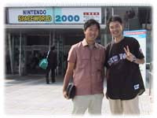
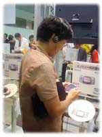
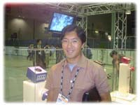

|

任天堂スペースワールド(2000/8/24〜26)での任天堂新製品発表会に行ってきました。会場入り口でカプコンの稲船サンと偶然会いました。『鬼武者』や『ロックマン』シリーズを作った方です。会場に入ると約１時間前なのにも関わらず席の殆どが埋まっていて、みなさんの関心の高さが伺われました。結局始まるまでの１時間は席に座って稲船サンとお話していました。
 今までいろんな発表会等に行った事がありますが、こんなに早い時間からみんな座って待っているのって初めてです。任天堂って凄いなー。発表会の始めに副社長の浅田さんが出て来られてお話を始められたのですが、僕はてっきり山内社長が出て来るんだと思っていたのでちょっとビックリしました。後で聞いたのですが、今回の発表会は山内さんが出ないと言うのも凄い事だったんだというお話でした。
今までいろんな発表会等に行った事がありますが、こんなに早い時間からみんな座って待っているのって初めてです。任天堂って凄いなー。発表会の始めに副社長の浅田さんが出て来られてお話を始められたのですが、僕はてっきり山内社長が出て来るんだと思っていたのでちょっとビックリしました。後で聞いたのですが、今回の発表会は山内さんが出ないと言うのも凄い事だったんだというお話でした。
 ゲームボーイアドバンスの説明の後、ドルフィンの発表が始まりました。人が入れるくらいの空のボックスが出てきて、カーテンを閉めた後スモークを焚いたので、これはこのボックスから宮本さんが出てくるのかと思いました。(^_^;) でも、実際はゲームキューブを持ったおねえさんが５人出てきました。なんか『ソニックアドベンチャー』発表会で、僕自身が風船の中から登場したので、とうとう宮本さんも同じようなことをやるのかと思って期待してしまいました。
ゲームボーイアドバンスの説明の後、ドルフィンの発表が始まりました。人が入れるくらいの空のボックスが出てきて、カーテンを閉めた後スモークを焚いたので、これはこのボックスから宮本さんが出てくるのかと思いました。(^_^;) でも、実際はゲームキューブを持ったおねえさんが５人出てきました。なんか『ソニックアドベンチャー』発表会で、僕自身が風船の中から登場したので、とうとう宮本さんも同じようなことをやるのかと思って期待してしまいました。
この瞬間にゲームキューブと言う名前が発表されたんですが、聞いてすぐに「あれ？なんか聞いたことがあるぞ」って思っちゃいました。そう、３年ほど前にドリームキャストの名前を決める際に、ソニックチームからの候補として挙げた名前が、「Ｇキューブ」だったんです。もちろんＧはゲームと言う意味を込めて出したので、驚きました。(^^) ＤＣの開発当時の外観をどうするかまだ決め兼ねていた時に、平べったいのと箱型の物があったので、ソニックチームとしてはこの箱型が良いということで、名前を「Ｇキューブ」という候補を出した覚えがあります。そう、コントローラーがささる所も４つありましたので外観も今回のゲームキューブによく似ていました。でも、ＤＣはディスクの出し入れがフロントローディングだったんですがね。なんかとっても親近感を覚えてしまいました。

ゲームキューブの実機デモの時に、宮本さんが出てこられてコントローラーの説明をされた時、とっても嬉しそうに説明をされていたのが印象的でした。その後、『マリオ１２８』の紹介があったのですが、６４のマリオを一人出して次々と箱の中からマリオを出していって１２８人のマリオを画面上に出して動かしたのですが、６４人目のマリオが出た時に、「これが『マリオ６４』ですかね？」と宮本さんが言われたのがとっても良かったです。(^^) 思わず笑ってしまいました。(^○^)
 しかし、ゲームキューブって凄いですね。これだけ沢山のマリオを出して、しかも全部がコリジョンを取りながら動いていたみたいですし、画面のエフェクトを何を掛けてもＣＰＵに負担が全然掛からないみたいです。画面下の方に処理メーターが出ていたんですが、それがずっと３分の１の辺りで殆ど動かなかったので、キャッシュが効いているんですかね？ ゲームを作る際に画面とゲームを切り離して考えられるみたいで、とっても良さそうです。発表でもゲーム開発者がゲームを作りやすくするのを目指して作ったと言われていましたので、僕ら開発からすると、とっても良い考えだと思いました。ちなみに、ドリームキャストもサターンに比べればとっても作りやすくなっているんですけどね。
ムービーは、ルイージやリンクが生き生きと動いているのがとっても良かったです。僕らもキャラクターを扱っているのでもっとがんばらないとと思いました。
しかし、ゲームキューブって凄いですね。これだけ沢山のマリオを出して、しかも全部がコリジョンを取りながら動いていたみたいですし、画面のエフェクトを何を掛けてもＣＰＵに負担が全然掛からないみたいです。画面下の方に処理メーターが出ていたんですが、それがずっと３分の１の辺りで殆ど動かなかったので、キャッシュが効いているんですかね？ ゲームを作る際に画面とゲームを切り離して考えられるみたいで、とっても良さそうです。発表でもゲーム開発者がゲームを作りやすくするのを目指して作ったと言われていましたので、僕ら開発からすると、とっても良い考えだと思いました。ちなみに、ドリームキャストもサターンに比べればとっても作りやすくなっているんですけどね。
ムービーは、ルイージやリンクが生き生きと動いているのがとっても良かったです。僕らもキャラクターを扱っているのでもっとがんばらないとと思いました。

ゲームキューブでメディアが８センチＣＤで1.5ＧＢ入ると言うのが良いなと思いました。特にコピー問題にとっても良いですよね。でも欲をいうと任天堂サンならこのメディアをカートリッジに入れて欲しかったです。
そうそう、この発表会の時に宮本さんがインタビューを受けられたのがファミ通ドットコムに載っているんですが、その中で『サンバＤＥアミーゴ』の事を誉めていただきました。
宮本さん本当にありがとうございます。m(__)m
Ｅ３でお会いした際にも「いいね」って言っていただき、とっても嬉しかったです。(^○）
|